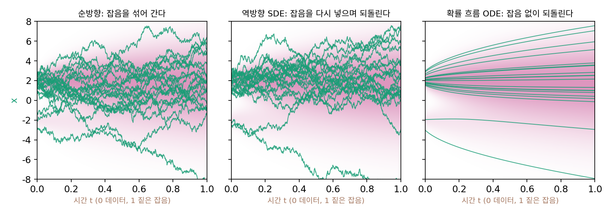

역방향 SDE: 잡음을 다시 넣으며 거꾸로 걷기
담금질 랑주뱅은 안개를 한 단계 걷을 때마다 멈춰 서서 점들이 자리 잡기를 기다렸다. 그런데 퍼지는 흐름을 거꾸로 따라가는 길은 기다리지 않았다. 시간을 1에서 0으로 줄이며 걸음마다 그 시간의 바늘 쪽으로 DsΔt만큼 옮겼을 뿐인데, 매 순간의 분포가 잡음 섞인 분포 pt를 그대로 되짚었다. 그리고 DDPM은 같은 일을 하면서 걸음마다 잡음을 새로 넣었다. 기다리지 않고 안개를 연속으로 걷으면서 잡음까지 넣는다면, 잡음은 얼마나 넣어야 할까? 아무렇게나 넣어도 될까?
역사: 신호 처리에서 온 거꾸로 가는 방정식
시간에 따라 잡음이 쌓이는 과정을 적는 미분방정식(확률 미분방정식, 영어 stochastic differential equation 의 머리글자로 SDE)에는 방향이 붙어 있다. 미래에 더해질 잡음은 지금까지의 값과 상관없이 새로 뽑힌다고 가정하기 때문이다. 오스트레일리아 뉴캐슬 대학교 전기공학과의 브라이언 앤더슨(Brian D. O. Anderson)은 이 방향을 뒤집은 식을 연구했다. 신호 처리에서는 한 시점의 값을 그 뒤의 관측까지 써서 다시 짐작하는 문제(스무딩)가 있었고, 이런 문제에는 시간을 거꾸로 흐르는 모형이 쓸모가 있었다. 잡음 섞인 과정이 선형인 경우에는 그런 모형을 만드는 법이 이미 알려져 있었지만, 일반적인 경우는 아니었다. 앞선 연구 가운데 넬슨과 스트라토노비치의 결과는 거꾸로 가는 식을 몰아가는 잡음이 원래 식의 잡음과 어떤 관계인지 밝히지 못했다고 앤더슨은 적었다.
1979년에 투고해 1982년 『확률 과정과 그 응용』에 실린 논문 「시간을 거꾸로 가는 확산 방정식 모형」에서 그는 앞으로 가는 확산 방정식으로 적히는 과정 대부분에 짝이 되는 거꾸로 가는 모형이 있음을 보였다. 거꾸로 가는 식의 끌림 항은 원래 끌림에서 「확률 밀도의 기울기를 밀도로 나눈 항」, 곧 오늘날의 말로 스코어 항을 뺀 꼴이었다. 이 결과는 거의 40년 뒤 송과 동료들의 2021년 논문 「확률 미분방정식을 통한 스코어 기반 생성 모델」에서 디퓨전 모델의 중심 식이 된다. 그 논문 요약은 이렇게 적었다. 「결정적으로, 거꾸로 가는 SDE는 잡음 섞인 데이터 분포의 시간에 따른 기울기 장(곧 스코어)에만 의존한다.」
흐름에 랑주뱅 걸음 하나를 얹는다
지금까지 본 두 걸음으로 답을 만들 수 있다. 하나는 퍼지는 흐름을 거꾸로 따라가는 걸음이다. 잡음 분산이 2Dt로 쌓이는 이 책의 기본 일정에서, 이 걸음은 점들의 분포가 pt에서 pt−Δt로 옮겨 가게 한다. 다른 하나는 랑주뱅 걸음이다. 분포가 이미 pt라면, 그 분포의 바늘로 걷는 랑주뱅 걸음은 분포를 바꾸지 않고 점들만 섞는다. 그렇다면 거꾸로 흐르는 걸음마다 걸음 크기 η = DΔt인 랑주뱅 걸음을 하나씩 얹어도 분포는 pt를 그대로 되짚는다.
바늘 쪽으로 옮기는 몫이 거꾸로 흐르기의 두 배가 되고, 그만큼 잡음이 들어간다. ±2에 봉우리를 둔 데이터(−2에 0.2, +2에 0.8, 폭 0.5)를 D = 4로 퍼뜨린 t = 1의 분포(잡음 분산 8)에서 점 2만 개를 뽑아 두 걸음법으로 2,000걸음 걸어 보자. 거꾸로 흐르기만 하면 오른쪽 비율 0.803, |x|의 평균 1.998, 표준편차 0.504이고, 랑주뱅 걸음을 얹으면 0.804, 2.003, 0.503이다(참값 0.8, 약 2, 약 0.5). 둘 다 데이터로 돌아온다.
일반적인 꼴: 앤더슨의 식
순방향 과정은 일반적으로 걸음마다 점을 fΔt만큼 옮기고 표준편차 g√Δt인 잡음을 더한다고 적을 수 있다. 걸음을 한없이 잘게 나눈 극한을 SDE 꼴로 dx = f dt + g dW로 적는다. dW는 시간 dt 동안 더해지는 표준 브라운 운동의 변화, 곧 √dt × (표준정규 잡음)이다. 이 책의 기본 일정은 f = 0, g² = 2D이고, DDPM의 분산 보존 일정은 점을 원점 쪽으로 조금씩 당기는 f = −½β(t)x, g² = β(t)다. 위에서 한 일을 이 일반적인 꼴에서 하면 앤더슨의 식이 나온다.
순방향의 끌림은 방향을 뒤집어(−f) 되돌리고, 순방향의 잡음이 퍼뜨린 것은 바늘 쪽으로 g²sΔt만큼 옮겨 거두어들이며, 같은 세기 g의 잡음을 새로 넣는다. 잡음의 부호는 뒤집을 수 없으니, 퍼짐을 되감는 값은 스코어가 치른다. f = 0, g² = 2D를 넣으면 위의 「거꾸로 흐르기 + 랑주뱅 걸음」 그대로다. 이 식을 역방향 SDE (잡음을 다시 넣으며 순방향 과정을 거꾸로 되짚는 확률 미분방정식 / reverse-time SDE)라 한다. 논문들은 이 식을 dx = [f − g²s] dt + g dW̄로 적고 「dt는 음수」라고 덧붙인다. 시간을 거꾸로 가니 dt = −Δt를 넣으면 위의 걸음이 된다. 위에 줄 그은 W̄는 거꾸로 가는 시간에서 새로 뽑히는 브라운 운동이다.

ML에서: DDPM의 한 걸음은 역방향 SDE의 한 걸음
DDPM이 그림을 뽑는 한 걸음은 잡음 예측 εθ로 평균을 정하고, 분산 βt인 잡음을 새로 넣는다. 잡음 예측과 스코어는 s = −εθ/σt로 바뀌니, 그 걸음을 스코어로 적고 βt가 작을 때 1/√(1 − βt) ≈ 1 + ½βt를 쓰면 다음과 같다.
분산 보존 일정의 한 걸음에서는 fΔt = −½βtx이고 g²Δt = βt이니, 오른쪽 끝은 앤더슨의 식 한 걸음과 같다. 송과 동료들의 2021년 논문도 DDPM의 뽑는 법이 역방향 분산 보존 SDE를 시간에 따라 끊어 푼 한 방식에 해당한다고 적었다. 같은 논문은 걸음마다 역방향 SDE로 한 걸음 내디딘 뒤(예측) 그 잡음 수준의 랑주뱅 걸음으로 분포를 바로잡는(교정) 「예측–교정」 샘플러를 제안하면서, 담금질 랑주뱅은 예측 없이 교정만 하는 것이고 DDPM은 교정 없이 예측만 하는 것이라고 정리했다. 앞의 두 절과 이 절이 한 틀에 들어간다.
문제 6. 쉬는 시간의 자리 바꾸기
30명이 앉은 교실에 창가 자리가 6개 있다. 쉬는 시간마다 무작위로 두 사람을 골라 자리를 맞바꾼다. 민준이는 처음에 창가에 앉아 있다. (가) 자리를 몇 번 바꿔도, 창가에 앉은 사람 수는 몇 명인가? (나) 1번, 10번, 30번, 100번 바꾼 뒤 민준이가 창가에 있을 확률은? (다) 이 반 사람 가운데 아무나 하나를 골랐을 때 창가에 있을 확률과 견주면?

자리를 바꾸면 반의 배치가 바뀌는 거잖아요. 계속 바꾸면 결국 엉망이 되지 않아요?

(가)부터 봐요. 창가에 앉은 사람 수는요?
아, 언제나 6명이에요. 자리는 그대로고 앉은 사람만 바뀌니까요.

(나)는 한 번 바꿀 때 민준이가 뽑힐 확률이 2/30이고, 뽑히면 나머지 29명 중 한 명의 자리로 가. 그걸로 확률을 이어 계산하면 1번 뒤 0.945, 10번 0.592, 30번 0.294, 100번 0.201이야. 모의로 2만 번 돌려도 0.946, 0.588, 0.292, 0.202가 나와.

100번쯤 바꾸면 0.2, 곧 (다)의 6/30이랑 같아지네요. 반 전체로 보면 아무것도 안 바뀌는데, 나 한 사람은 처음 자리를 잊어버리는 거고요.

그래요. 분포를 바꾸지 않는 섞기는 얼마든지 끼워 넣을 수 있고, 끼워 넣을수록 각자의 처음 자리는 잊혀요.
수학 수업에서 본 순열의 무작위 섞기랑 같아요. 섞는 규칙이 균등분포를 바꾸지 않으니까, 처음이 어떻든 결국 균등분포로 가는 거죠.
문제 7. 짝을 깨면 (킬러)
데이터는 −2(비중 0.2)와 +2(비중 0.8), 폭 0.5인 두 봉우리다. 이번에는 D = 16으로 퍼뜨려 t = 1의 잡음 분산이 32다. 스코어는 정확히 알고, t = 1의 분포에서 점 2만 개를 뽑아 2,000걸음에 t = 0까지 거꾸로 걷는다. (가) 거꾸로 흐르기(x + DsΔt)에 잡음 √(2DΔt)ε만 더하면? (나) 역방향 SDE에서 잡음만 빼면(x + 2DsΔt)? (다) 잡음을 두 몫(√(4DΔt)ε) 넣고 싶다면 바늘 몫은 얼마여야 하는가? 오른쪽 비율과 |x|의 평균·표준편차로 답하라(참값 0.8, 약 2, 약 0.5). (풀어 본 뒤 위젯 2의 「문제 7 불러오기」와 다른 단추로 확인해 보자.)

(가)는 거꾸로 흐르기로도 도착하니까 거기에 잡음을 좀 더하면 「확률적인 판」이 되지 않을까 해서 돌려 봤어요. 오른쪽 비율 0.670, |x|의 평균 2.390, 표준편차 1.006이에요. 봉우리가 두 배로 뭉개졌어요.

잡음만 넣고 그걸 거두어들일 바늘 몫이 없잖아. 넣은 잡음만큼 퍼진 거야.

그러는 너는?

나는 반대로 (나)를 했어. 잡음 없이 바늘만 두 배로 두면 더 깔끔하게 볼로 가겠지 싶어서. 그랬더니… 오른쪽 비율 0.981, 표준편차 0.092야. 거의 다 오른쪽 볼 한가운데에 붙었어.

너는 너무 세게 끌어서 다 꼭대기로 보냈네. 왼쪽 볼은 거의 사라졌고.

둘 다 짝을 깬 거예요. 역방향 SDE의 바늘 몫 2DsΔt 가운데 하나는 거꾸로 흐르기의 몫이고, 다른 하나는 잡음 √(2DΔt)ε와 한 쌍인 랑주뱅 걸음이에요. 쌍에서 잡음만 남기면 퍼지고, 바늘만 남기면 오르기만 하는 거예요.

오르기만 하던 첫 실험이랑 같네요. 그럼 (다)는 랑주뱅 걸음을 두 번 얹는 거니까, 바늘 몫은 3DsΔt예요.
3DsΔt + √(4DΔt)ε로 돌리면 0.803, 2.003, 0.509예요. 맞아요. 거꾸로 흐르기만 했을 때는 0.801, 2.002, 0.503이고요.
쌍의 수를 λ(람다)라 하면 걸음은 x + (1 + λ)DsΔt + √(2λDΔt)ε예요. λ = 0이 거꾸로 흐르기, λ = 1이 역방향 SDE이고, 짝만 지키면 λ를 얼마로 하든 같은 분포에 닿아요.

그러면 λ는 「분포는 그대로 두고 점들을 얼마나 섞을지」를 고르는 손잡이네요.
자리 바꾸기를 쉬는 시간마다 몇 번 하느냐랑 같은 거구나. 반 배치는 그대로고, 많이 바꿀수록 각자 처음 자리를 빨리 잊고요.
문제 8. 거꾸로 도는 분산 보존 과정 (킬러)
분산 보존 일정 가운데 가장 단순한 것, β = 10으로 일정한 순방향 과정 dx = −5x dt + √10 dW(t는 0에서 1)를 쓴다. 데이터는 x₀ ~ N(3, 0.5²)이다. (가) pt의 평균과 분산을 구하라. t = 1에서 pt는 무엇에 가까운가? (나) 역방향 SDE의 한 걸음을 적어라. (다) N(0, 1)에서 점 2만 개를 뽑아 2,000걸음에 t = 0까지 거꾸로 걸어, 데이터 분포가 돌아오는지 확인하라.
(가)는 끌림이 선형이라 쉬워요. 평균은 3e^(−5t), 분산은 0.25e^(−10t) + (1 − e^(−10t))예요. t = 1이면 평균 0.0202, 분산 0.99997이라 거의 N(0, 1)이에요.
좋아요. (나)는요?
거꾸로 가는 거니까 끌림의 방향만 뒤집으면 돼요. x + 5xΔt + √(10Δt)ε.
나는 논문 식대로 썼어. dx = [f − g²s] dt + g dW̄에 f = −5x, g² = 10을 넣어서 x + (−5x − 10s)Δt + √(10Δt)ε로 돌렸어.
둘 다 (다)를 돌려 봤어요?

제 식은 평균 −2.090, 표준편차 209가 나왔어요. 데이터는 3 ± 0.5인데요.
제 건 평균 −126, 표준편차 823이에요. 더 심해요.

서연 학생 식부터 봐요. 209라는 숫자에서 뭐가 보여요?
걸음마다 x에 5xΔt를 더하면 시간 1 동안 e⁵ = 148배로 커져요. 잡음까지 함께 불어나니 200대가 맞아요. 제 식에는 흩어진 것을 다시 모으는 몫이 없어요. 끌림을 뒤집어도 잡음은 여전히 퍼뜨리니까, 퍼진 것을 거둬들일 −g²s 몫이 따로 있어야 해요.
민준 학생 식은 몫은 다 있어요. 무엇이 틀렸을까요?

논문 식의 dt는… 시간을 거슬러 가니까 음수예요. 저는 양수 Δt로 넣었으니 끌림 전체의 부호가 뒤집혔어요. 바늘 몫이 모으는 대신 밀어냈고요.
dt = −Δt를 넣으면 x + (5x + 10s)Δt + √(10Δt)ε예요. 스코어는 가우시안이라 −(x − 평균)/분산으로 바로 적히고요.

다시 돌렸어요. 평균 3.002, 표준편차 0.502예요. 3과 0.5가 돌아왔어요!
5x는 순방향 끌림을 뒤집은 몫이고 10s는 잡음이 퍼뜨린 걸 되감는 몫이야. 둘 중 하나만 있으면 안 돼.
DDPM의 순방향 과정이 바로 이런 분산 보존 과정이고, DDPM이 그림을 뽑는 걸음은 이 식을 끊어 푼 거예요. 신경망은 여기서 식으로 적은 스코어를 대신 배울 뿐이에요.
보고서 수정 기록을 되돌릴 때랑 같네요. 지운 문장은 기록대로 되살리면 되는데, 커피를 쏟아 번진 부분은 원래 뭐였을지 짐작하는 도구가 따로 있어야 하잖아요. 스코어가 그 도구고요.